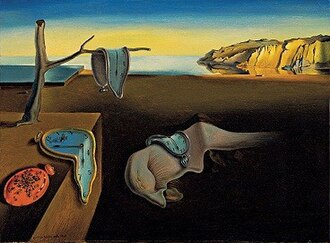

Salvador Dalí

Dalí foi um pintor surrealista espanhol, conhecido por sua imaginação vívida e estilo excêntrico. Nascido em 1904, criou imagens oníricas que desafiam a lógica.
Principais obras

A Persistência da Memória (1931)

Cisnes Refletindo Elefantes (1937)